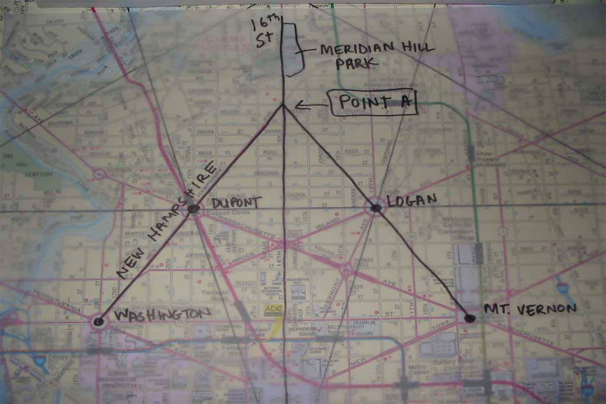
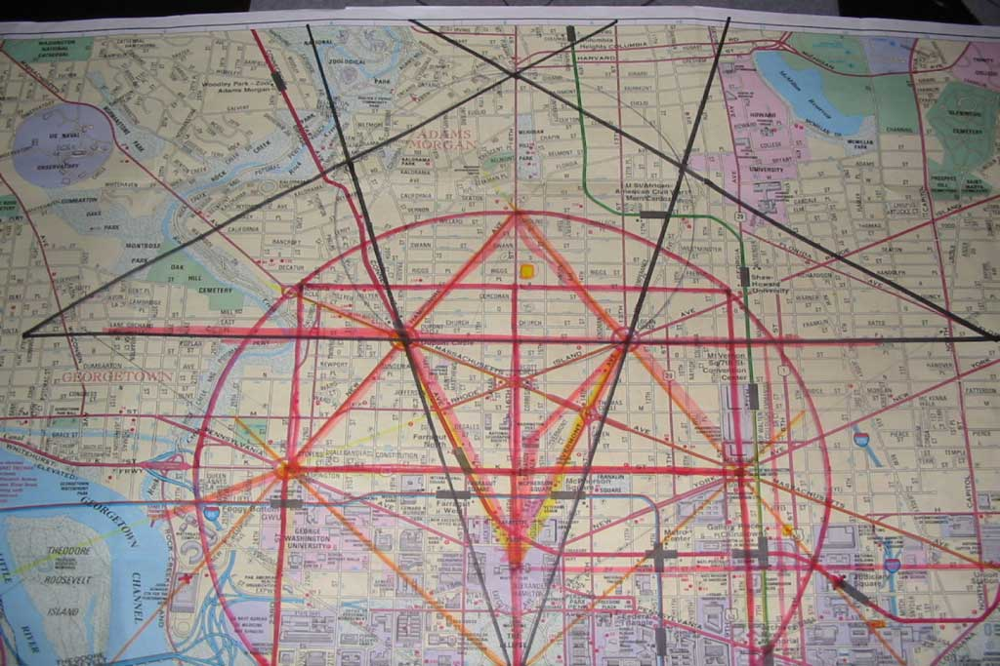
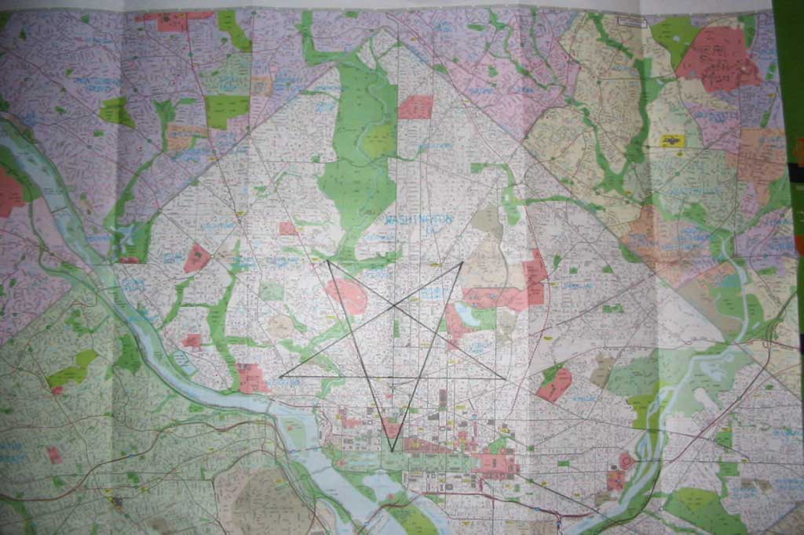
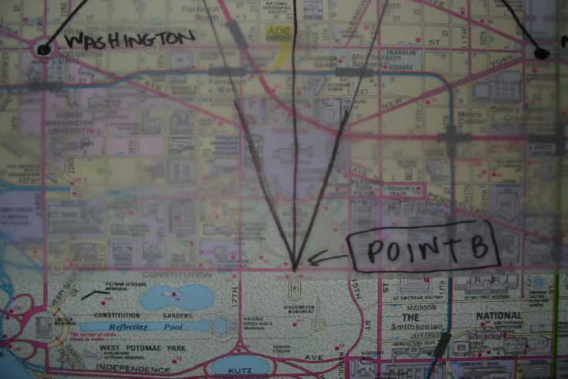
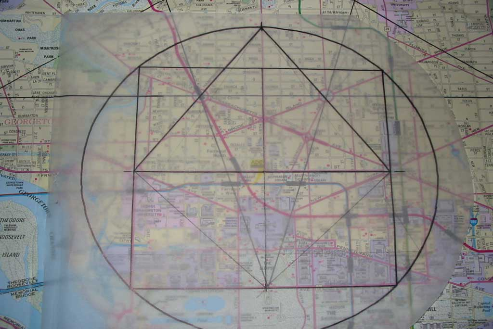

Such symbolism generally relates to images of an owl or an inverted pentagram.
Some conspiracy theorists point to an upside-down star near the White House, but this star is only an approximation of a true pentagram. That is, this star is not geometrically accurate (slightly flattened) and does not constitute a true pentagram.
These explanations are not geometrically rigorous (as the precepts of Freemasonry would demand).
What follows is a geometrically rigorous explanation of how Masonic symbolism can be superimposed on the street layout of Washington, D.C.
16th street is the meridian of DC's street layout. Notice Meridian Hill Park on 16th St. Using that as a central axis, we can see the symmetry inherent in the layout. Dupont Circle corresponds with Logan Circle, and Washington Circle corresponds with Mt. Vernon Square. Although the mirror image of New Hampshire Ave is missing, we can superimpose it with a line connecting Logan and Mt. Vernon:

If we use Dupont and Logan as two corners of this pentagon, we can draw several additional figures.

If we extend the pentagon to construct a pentagram, we get this image:

Let the bottom point of the pentagram (where Constitution and 16th Street intersect) be Point B:

If 16th St. is the meridian, the equator would be K St. Let Point C (Center) be the intersection of 16th and K.
Draw Circle 1 around Point C, where the radius of the circle equals the distance to Point A (Apex of 72-degree triangle). The two sqaures that flank the White House fit perfectly in the lower hemisphere of Circle 1. The lower corners of the lower squares also touch at Point B (16th and Constitution). Altogether, we get a circle, square, and triangle that fit together in harmony:

CLICK HERE TO LEARN ABOUT THE INNER SECRETS UNLOCKED BY THIS KEY